CLI
cargo install kumeyuri
kumeyuri render diagrams/flow.mmd --format svg \
--theme github --dark-theme tokyo-night > public/flow.svg
Mermaid, animated. Anywhere text renders.
A Rust renderer that turns vanilla Mermaid into animated terminal, SVG, raster, and browser artefacts from one frame stream.
Install
cargo install kumeyuri
kumeyuri render diagrams/flow.mmd --format svg \
--theme github --dark-theme tokyo-night > public/flow.svgnpm install kumeyuri
import initWasm, * as wasm from "kumeyuri/wasm";
import { defineKumeyuriElement, initKumeyuri } from "kumeyuri";
await initKumeyuri({ ...wasm, default: initWasm });
defineKumeyuriElement();kumeyuri render docs/diagram.mmd --format webp > public/diagram.webp
kumeyuri compat --json > public/kumeyuri-compat.jsonOutputs
Playground
Adoption Gallery

kumeyuri render http-request-lifecycle.mmd --format svg > public/http.svg
kumeyuri render fan-out.mmd --format webp --padding 12 > public/fan-out.webp
kumeyuri render scheduler.mmd --format gif --theme github > public/scheduler.gifBuild-Time Plugins
Regression Dashboard